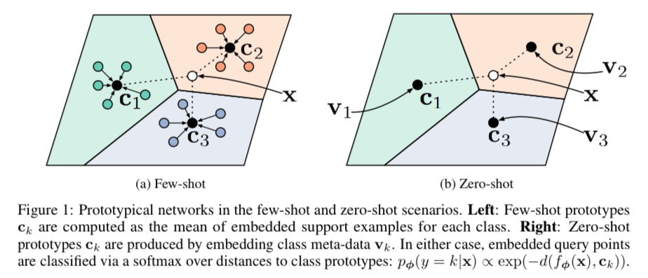
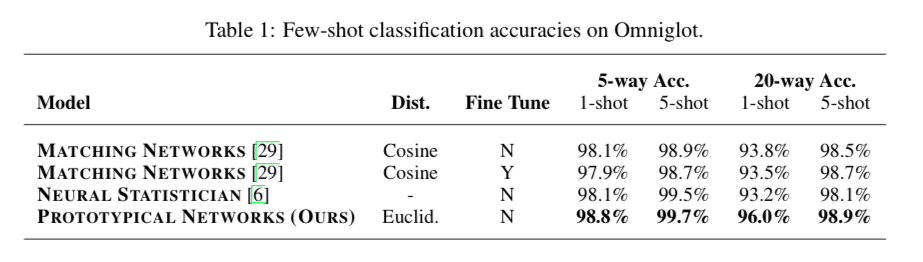
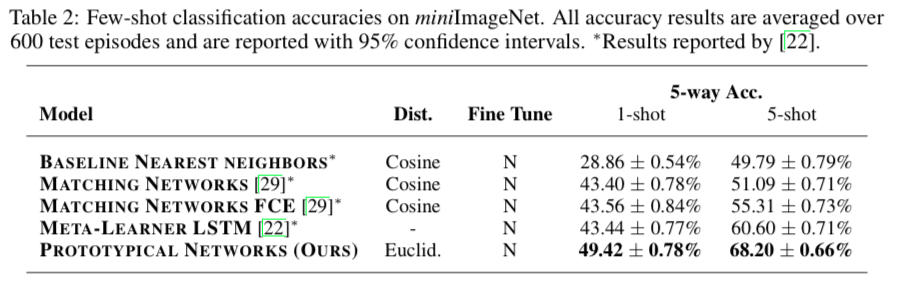
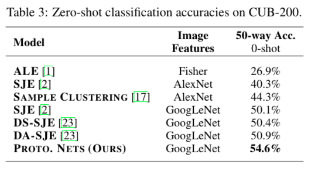

Motivation
few-shot classification 任务要求分类器对之前从来没有见过的新类，只需要少量样本就可以进行识别。论文提出的原型网络 (Prototypical networks) 学习了一个类的原型，对每一样本，通过计算该样本到各个类原型的距离来判断样本所属类别。
很多few-shot learning方法发现对训练数据较少的问题，通过简单的归纳偏好 (inductive bias) 得到的结果较好，原型网络在few-shot learning上主要关注的是过拟合的问题，基于的假设是因为数据量非常有限，分类器的归纳偏置应该非常简单。原型网络认为对于每个类都存在一个原型，该类的所有实例都在这个原型周围。
Model
每一类的原型计算，是先用神经网络将输入映射到 embedding 空间，然后把support set在这个embedding 空间的均值作为该类的原型。测试分类时，就是先将query映射到同样的 embedding 空间，然后计算它和所有类原型的距离，将距离它最近的原型的类别作为query的类别。

每一类的原型是该类所有 embedded support points 的均值向量：
$f_\phi$ 是将输入映射到embedding空间的embedding function，$S_k$ 是 $k$ 类的 support set。
原型网络生成的是 query point $x$ 在所有类别上的分布：
$d(f_\phi(x), c_k)$ 是 $x$ 到第 $k$ 类原型 $c_k$ 的距离，用的是squared Euclidean distance。
损失函数中 $k$ 是 $x$ 的实际类别：
实验结果
在 Ominiglot 和 miniImageNet上都超过了Matching Nets:

论文还将原型网络扩展应用到 zero-shot learning上，在CU-Birds数据集上有很好的效果。

